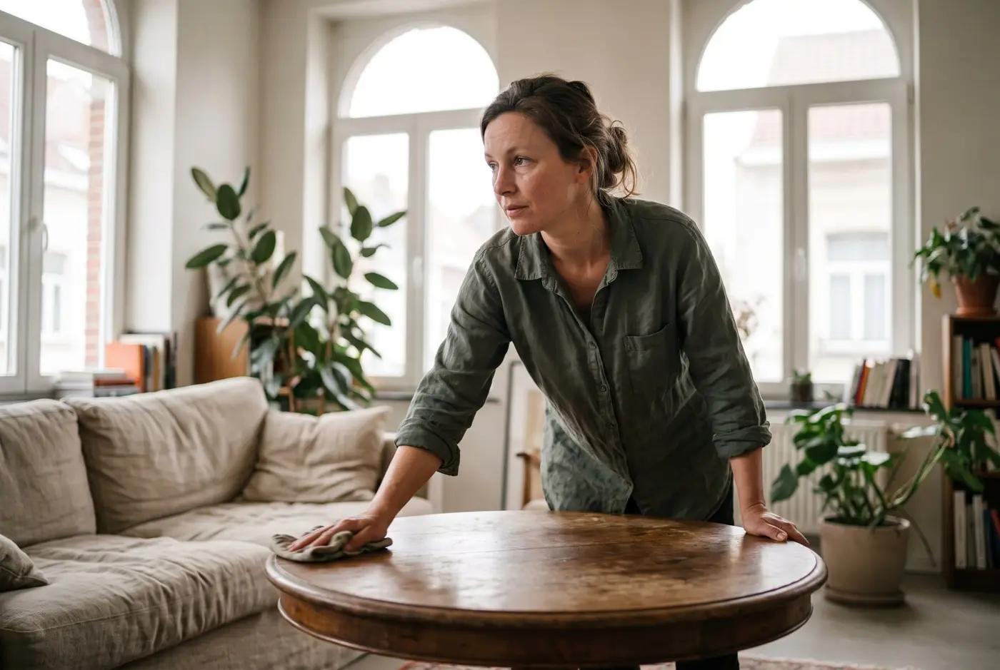

Evergem · 9940
Schoonmaakhulp voorkantoren in Evergem
Een kmo met een refter, een kleedruimte en sanitair voor de ploeg heeft meer nodig dan een gemiddeld kantoor. In Evergem doet één vaste persoon dat werk wekelijks.
Het korte antwoord
Zondags (zondags.be) levert schoonmaakhulp voor kmo's en kantoren in Evergem (9940), Ertvelde, Kluizen en Sleidinge. Eén vaste persoon, je Zondag, onderhoudt het kantoor, de refter, de kleedruimte en het sanitair van je ploeg. Ze komt op een vaste weekdag en een vast uur. Je betaalt 60 euro per uur exclusief btw, per blok van 3 uur, en ontvangt een factuur op naam van je bedrijf.
Ruimtes voor kantoor én ploeg
Veel kmo's in Evergem hebben twee werelden onder één dak. Vooraan een kantoor met bureaus en een onthaal, achteraan de ruimtes voor de ploeg: een refter, een kleedruimte, douches en toiletten. Die laatste zijn dagelijks drukker en vragen een vaste beurt, anders merkt iedereen het snel.
Een vaste Zondag leert die ruimtes kennen: waar de lockers staan, welke vloer sneller vuil wordt en welk toilet het drukst is. Zo wordt elk blok gerichter dan bij wisselend personeel, en verdwijnt de uitleg die anders elke keer opnieuw nodig is.
Voorbeeld: een notariskantoor met wachtzaal
Stel: je hebt een notariskantoor met een wachtzaal, twee kantoren voor de notaris en een vergaderzaal voor akten. Cliënten komen er voor belangrijke momenten en verwachten een ruimte die rust en zorg uitstraalt.
Je Zondag komt tegen de middag, wanneer de ochtendafspraken afgerond zijn. Ze zet de wachtzaal op orde, neemt de vergadertafel af, poetst het sanitair en laat de vloeren blinken. Documenten en dossiers blijven onaangeroerd; je Zondag handelt discreet en raakt enkel aan wat je haar toevertrouwt.
Een vaste routine voor de ploeg
- Refter: tafels, stoelen, vloer en keuken
- Kleedruimte: banken, vloer en lockers langs buiten
- Sanitair en douches
- Kantoor en onthaal
- Afval en recyclage
Het werk in magazijn of productie valt erbuiten, net als industriële reiniging. Het gaat om ruimtes waar mensen eten, zich omkleden of klanten ontvangen.
Evergem en omgeving
Evergem heeft postcode 9940. Ertvelde, Kluizen en Sleidinge zijn deelgemeenten van Evergem. Ook voor een zaak in Gent, Lievegem, Zelzate, Assenede of Kaprijke kunnen we kijken of een Zondag in de buurt beschikbaar is.
De voorbereiding is eenvoudig. Je geeft de Zondag toegang tot de ruimtes, toont waar het materiaal staat en duidt wat je niet aangeraakt wil zien, zoals een bureau vol lopende dossiers. Daarna volgt ze elke week dezelfde ronde, en kan je die uitbreiden als de ploeg groeit of een extra ruimte in gebruik komt.
Wat het kost
60 euro per uur exclusief btw, per blok van 3 uur: 180 euro exclusief btw. Extra uren tegen dezelfde prijs per uur. Je factuur staat op naam van je bedrijf. Poetshulp is in principe een beroepskost; de btw is in principe recupereerbaar voor een btw-plichtige zaak met aftrekrecht. Vraag het na bij je accountant.
Heb je in de zomer minder volk en in de herfst meer, dan pas je het aantal blokken aan zonder je plan om te gooien. Je boekt eenvoudigweg een blok extra of laat er eentje vallen voor een rustige week.
Aan de slag
Op de boekpagina kies je datum, taken en aantal blokken. Wil je een wekelijks plan met een vast uur, dan bespreken we eerst samen wat jouw ploeg nodig heeft. Voor een gesprek over de ruimere aanpak: poetshulp voor bedrijven.

Veelgestelde vragen
Vragen en antwoorden.
Wie poetst de refter en kleedruimte van mijn kmo in Evergem?
Zondags. Eén vaste persoon onderhoudt refter, kleedruimte, sanitair en kantoor van je bedrijf in Evergem en de deelgemeenten.
Is poetshulp voor een notariskantoor mogelijk?
Ja. Je Zondag poetst wachtzaal, kantoren en vergaderzaal. Dossiers en akten blijven in handen van je team.
Wat kost schoonmaakhulp in Evergem?
60 euro per uur exclusief btw, per blok van 3 uur (180 euro exclusief btw). Extra uren boek je aan hetzelfde tarief.
Komt de Zondag buiten de werkuren?
Op weekdagen vroeg in de ochtend of over de middag. Zondags werkt nooit 's avonds en nooit in het weekend.
Werkt Zondags ook in Sleidinge of Ertvelde?
Ja, ook Kluizen, Sleidinge en Ertvelde zijn deelgemeenten van Evergem en vallen onder het aanbod.
Kan een industriële hal ook gepoetst worden?
Nee. Productiehallen, werkplaatsen en industriële reiniging doet Zondags niet. Het kantoor, de refter, de kleedruimte en het sanitair wel, want dat zijn ruimtes waar mensen verblijven.
Vrijblijvend info
Vraag je Zondag aan.
Laat je naam, je bedrijf en je gsm achter. Binnen één werkdag bellen we je terug om te bespreken wat je Zondag voor je zaak kan doen.
Liever meteen iemand spreken? 0470 56 53 58, elke dag van 6 tot 22 uur.
Verder lezen